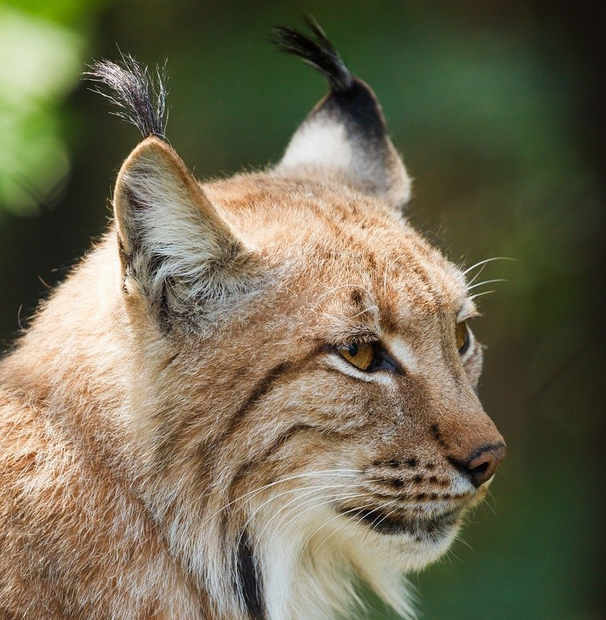
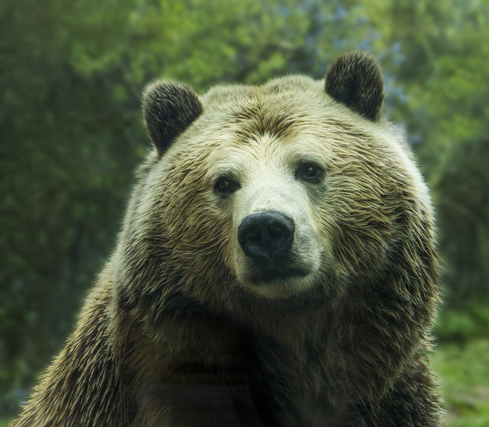
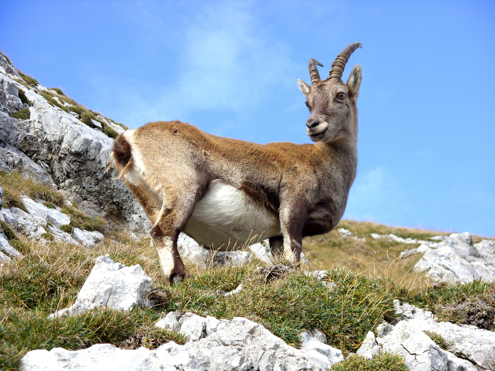
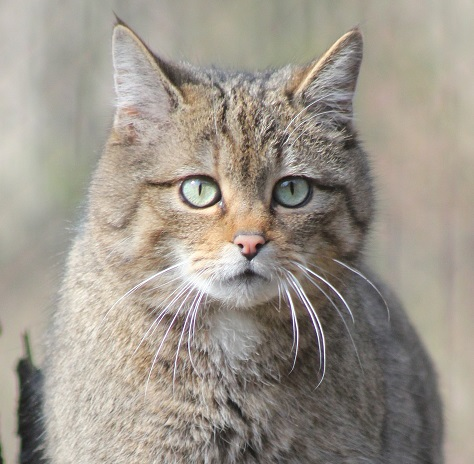
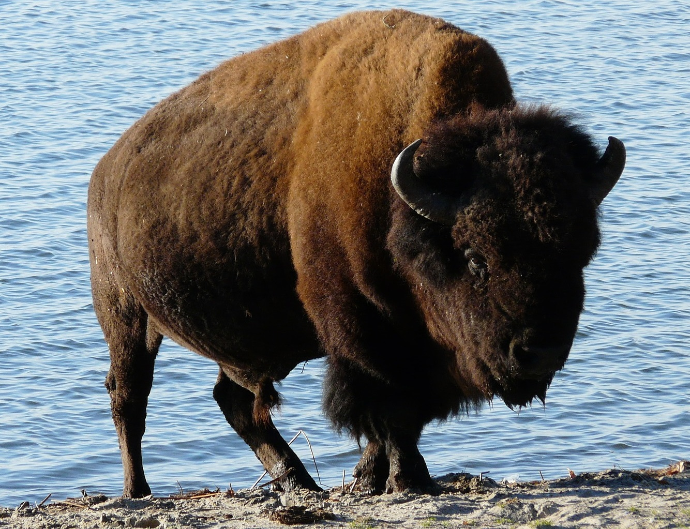
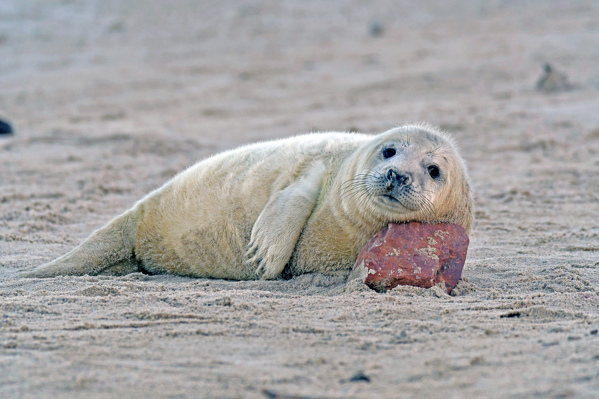

Ryś
Choć rysie w Polsce znajdują się pod ścisłą ochroną od 1995 roku, to w ciągu tych 25 lat nie poszerzyły znacząco zasięgu występowania.
Duże koty zamieszkują głównie dwa regiony - góry i pogórze oraz północno-wschodnią część Polski. Od kilku lat prowadzony jest projekt odbudowy tzw. populacji nizinnej (bałtyckiej).
Migrację utrudnia rysiom działalność człowieka - drogi szybkiego ruchu i zabudowa, która przerywa naturalne korytarze ekologiczne. W naturalnym środowisku trudno je spotkać nie tylko ze względu na ich tryb życia, ale też niewielką liczebność populacji.
Niedźwiedź
W Polsce znajduje się zaledwie nieco ponad sto niedźwiedzi. Tak znaczne skurczenie się populacji to wynik głównie ograniczenia naturalnego środowiska życia.
Niedźwiedzie dawniej występowały w całej Polsce, obecnie zamieszkują 5 ostoi, wśród których najliczniejsza jest ostoja bieszczadzka, która odpowiada za 80 proc. krajowej populacji.
Kozica Tatrzańska
W 2018 roku w Tatrach naliczono 1 431 kozic. Po polskiej stronie znajdowało się 421 sztuk, w tym 46 młodych. Zwierzęta te są w Polsce gatunkiem chronionym. Żyją w niewielkich stadach, na których czele stoi doświadczona samica, tak zwana licówka.
Samce, zwane capami, żyją najczęściej samotnie, dołączając do stad jesienią na czas godów. Problemy z ich liczebnością występują od dawna. Intensywne polowania, które sięgają XVIII wieku doprowadziły kozice na skraj wymarcia.
Problemem przez lata było także kłusownictwo. Po II wojnie światowej w Tatrach znajdowało się zaledwie około 26 osobników. Krytyczny poziom populacja osiągnęła w latach 90., gdy liczyła tylko 220 sztuk. Największe zagrożenia dla kozic to obecnie turystyka, ale też szkodliwe mutacje genetyczne gatunku.
Wilk
 Wilk trafił na listę zwierząt zagrożonych wyginięciem na skutek kurczenia się jego naturalnych środowisk i działalności człowieka, w tym kłusownictwa. W poszukiwaniu pożywienia drapieżniki zapuszczały się w pobliże gospodarstw, przez co uznano je za szkodniki i tępiono.
Wilk trafił na listę zwierząt zagrożonych wyginięciem na skutek kurczenia się jego naturalnych środowisk i działalności człowieka, w tym kłusownictwa. W poszukiwaniu pożywienia drapieżniki zapuszczały się w pobliże gospodarstw, przez co uznano je za szkodniki i tępiono.
Sytuacja zmieniła się pod koniec lat 90. Polska była jednym z pierwszych państw w Europie Środkowo-Wschodniej ze stałą populacją wilków, który zdecydował się na pełną ich ochronę.
W 1998 roku, kiedy to się stało, populacja liczyła około 500 osobników. Obecnie mówi się o około 2 tysiącach wilków żyjących w Polsce, choć są też szacunki, które podają liczbę 1400.
Żbik Europejski
Żbik obok rysia to drugi z przedstawicieli dzikich kotów w naszym kraju. Swoim wyglądem przypomina dużego kota domowego.
Jego bure futro stanowi idealny kamuflaż, przez co zauważenie żbika w jego środowisku naturalnym jest bardzo trudne” - pisze WWF. Szacuje się, że w Polsce we wschodniej części Karpat żyje nie więcej niż 200 żbików.
Żubr
W 1857 r. żubrów w Puszczy Białowieskiej było 1 tys. 898, w 1914 r. - przed wybuchem I wojny światowej 737, po pierwszej wojnie ani jednego - wynika z informacji zawartych w "Borusse i Reszta. 90 lat restytucji żubra".
Historia restytucji tego gatunku w Polsce to dowód na to, że świadoma walka o zagrożone gatunki może być skuteczna. Proces rozpoczęto w 19 września 1929 r., po podjętych wcześniej staraniach wielu środowisk w kraju i na świecie zainteresowanych uratowaniem żubra, kiedy to do Puszczy Białowieskiej przywieziono z ogrodów zoologicznych pierwsze żubry.
Przez lata ich populacja rozrastała się. W ocenie ekspertów obecnie w Polsce żyje najwięcej żubrów na świecie - ponad 1,8 tys. w stadach na wolności i zagrodach pokazowych.
Foka Szara
Jeszcze sto lat temu populacja fok szarych wynosiła około 100 tys. osobników.
Niszczenie środowiska i polowania na te morskie ssaki, a także rozwój turystyki, doprowadziły jednak do znacznego zmniejszenia się ich liczebności w Bałtyku. Obecnie szacuje się, że populacja liczy około 30 tys. fok szarych, tzw. szarytek morskich.